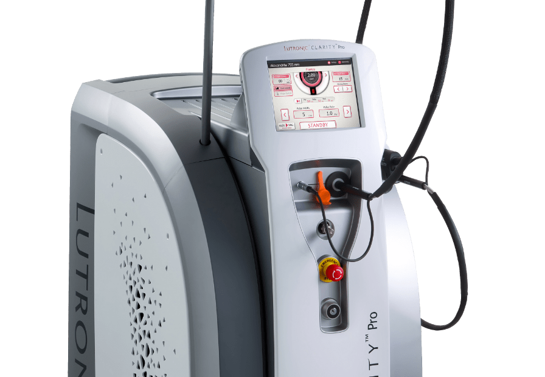
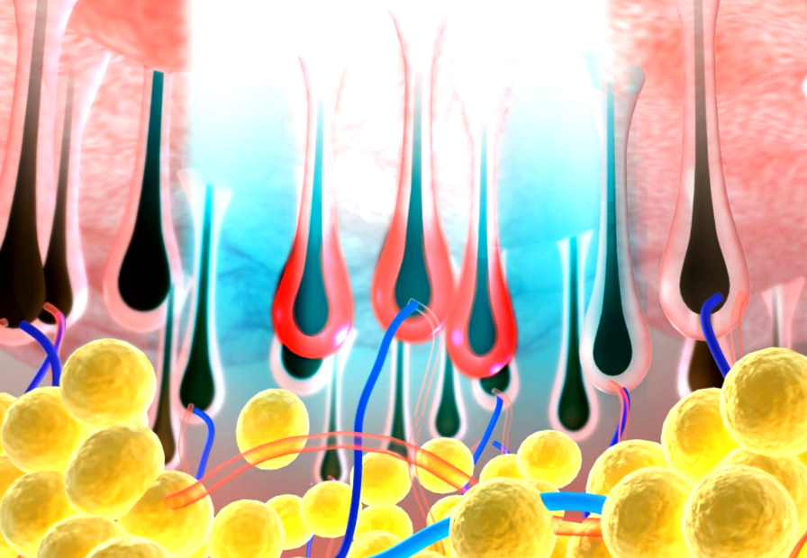
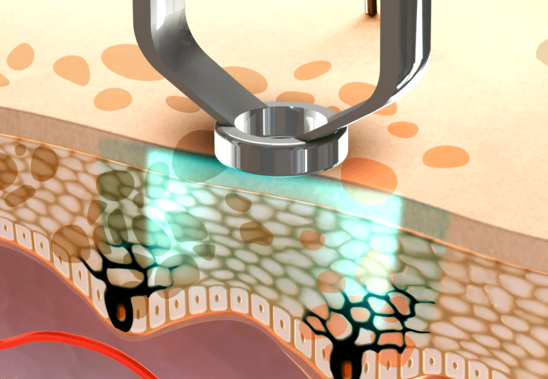

CLARITY PRO
빛나는, 더 반짝일 수 있는 당신을 위한 클라리티프로를 소개합니다.
Scroll

빛나는, 더 반짝일 수 있는 당신을 위한 클라리티프로를 소개합니다.
Scroll

두 가지 파장(755, 1064)의 레이저를 조합하여 색소, 탄력, 잔주름,
혈관, 홍조, 등 다양한 피부 증상에 적용 가능한 시술입니다.
또한 강력한 쿨링 기능으로 시술 시 마취가 필요 없고 일상생활에 빠르게
돌아갈 수 있다는 장점이 있습니다.
표피층에 있는 색소질환과 기미를
동시에 개선하여 피부를 깨끗하게 해줍니다.
콰트로 & 이너 리프트를 통해 넓은 모공과
처진 피부를 쫀쫀하고 탱탱하게 개선할 수 있습니다.
강력한 쿨링 기능으로 시술시 통증이 없어
마취가 필요하지 않고, 붉음증 등 후반응이 거의 없어
일상생활에도 지장이 생기지 않습니다.

15분 이내

즉시 생활 가능

2~4주 간격으로 3회 이상

없음
| 클라리티프로 | 클리어 레드 테크닉 | 알렉스토닝 |
|---|---|---|
|

맞춤식 토탈케어 레이저 시술
식품의약품안전처와 FDA의 인증을 받아 안전하고 |

붉은 얼굴 개선
레이저를 조사해 홍조를 유발시키는 혈관을 개선함으로써 |

칙칙한 피부를 맑고 투명하게 개선
레이저를 이용해 표피층에 있는 색소질환(주근깨, 잡티, 검버섯 등)과 |

얼룩덜룩 색소나 홍조, 모세혈관확장증으로 고생하시는 분
넓은 모공과 늘어진 피부탄력 개선을 원하는 분
여드름으로 인한 색소침착이나 혈관이 확장되어 불음증이 있으신 분
시술은 아래와 같이 진행되며 상황에 따라 변경될 수 있습니다.

1:1 맞춤상담

자가세안

시술

후관리

관리방법 안내